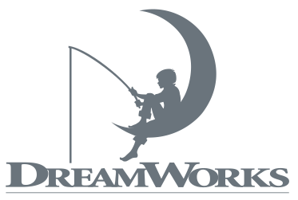

Creating digital experiences for over ten years
Ben Ludwig is a designer who specializes in the iterative, user-centered design of interface systems. His experience ranges from startups to Fortune 500 companies and his work has been recognized by the Chicago Tribune, The Hollywood Reporter and The Webby Awards.
He is currently on the Innovation Team at Rise Interactive, focusing on data visualization for proprietary software applications. In a recent joint venture with Strange Flock, he released News Real, an iOS application that detects fake news websites.
